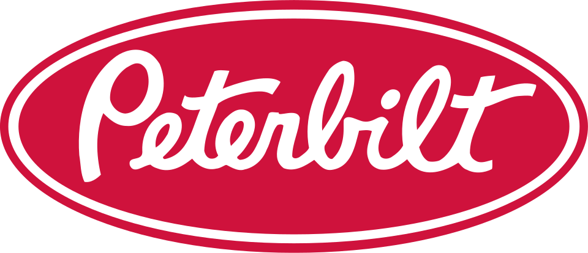

피터빌트 Peterbilt
피터빌트(Peterbilt)는 중형(Class 5–7)과 대형(Class 8) 상용 트럭을 생산하는 미국의 트럭 제조사이다. 1939년 설립되었으며 1958년부터 PACCAR의 일부로 운영되고 있다.
최종 업데이트

피터빌트는 어떤 브랜드인가
피터빌트(Peterbilt)는 미국의 트럭 제조사로, 대형(Class 8)과 중형(Class 5–7) 상용 차량을 전문으로 생산한다. 회사명은 창업자 T.
"Al" Peterman의 이름에서 유래했다. 1939년 Fageol Truck and Motor Company를 인수하며 설립되었고, 1958년부터 PACCAR의 일원으로 운영되고 있다.
같은 PACCAR 계열의 Kenworth Truck Company와 경쟁하며, 미국 트럭 제조업에서 가장 오래 이어진 시장 경쟁 구도 중 하나를 형성하고 있다. 본사는 텍사스주 덴턴에 있으며, 트럭은 1953년부터 사용된 붉은 타원형 엠블럼으로 식별된다.
피터빌트는 어떻게 시작되고 성장했나
피터빌트는 미국 태평양 북서부의 벌목 산업에서 출발했다. 워싱턴주 타코마의 목재업자 T.
Peterman은 1934년 모턴에 30,000에이커의 산림을 사들였고, 철도 대신 도로를 닦아 미군이 처분한 White Motor Company 트럭으로 운송 차량단을 꾸렸다. 1938년 샌프란시스코 출장에서 Fageol Truck and Motor Company가 매물로 나온 사실을 알게 된 그는 Sterling Motor Company로부터 이를 $50,000에 인수했고, 1939년 인수를 마쳤다.
같은 해 캘리포니아주 오클랜드의 공장이 Peterbilt Motors Company로 문을 열었다. Peterman은 1944년 11월 세상을 떠났고 회사는 아내 Ida에게 넘어갔으며, 1947년 Ida는 회사를 경영진과 투자자 그룹에 $450,000에 매각했다.
피터빌트의 브랜드 아이덴티티는 무엇인가
피터빌트는 벌목 사업가의 트럭 제작에서 출발해 붉은 타원형 엠블럼으로 알려진, 같은 PACCAR 계열의 Kenworth와 경쟁하는 미국 트럭 브랜드이다.
피터빌트의 대표 제품과 서비스는 무엇인가
1939년 4월 피터빌트는 첫 판매 차량으로 단축 모델 260(체인 구동)과 탠덤 축 모델 334(샤프트 구동)를 내놓았고, 두 모델 모두 가솔린 또는 디젤 엔진을 선택할 수 있었다. 이 차량들은 올스틸 캡을 갖추었으며 Peterman 소유 제재소의 합판으로 마감되었다.
이후 40년간 단일 후축 트럭은 2로, 탠덤 후축 트럭은 3으로 시작하는 모델 번호를 붙였다. 1941년에는 더 무거운 Model 364를 만들었고, 1942년에는 260에서 파생한 첫 캡오버 엔진(COE) 트럭을 개발했다.
1945년에는 적재량을 늘리기 위해 가벼운 알루미늄 캡을 도입했고, 1949년에는 260/334를 대체하는 Model 280/350 "Iron Nose"를 선보였다.
피터빌트는 지금 어떤 상태인가
피터빌트는 텍사스주 덴턴에 본사를 두고 있으며 모기업은 파카 그룹(PACCAR)이다. 덴턴 외에도 캐나다 퀘벡주 Sainte-Thérèse와 멕시코 Mexicali에 있는 PACCAR 시설에서 트럭을 생산한다.
1965년부터 컨벤셔널 캡 트럭에 새 모양의 후드 장식을 사용해 왔다.
피터빌트 로고는 어떻게 변해왔나
자주 묻는 질문
피터빌트는 어느 나라 브랜드인가요?
피터빌트는 미국의 모빌리티 브랜드입니다.
피터빌트는 언제 설립되었나요?
피터빌트는 1939년 설립되었습니다.
피터빌트의 브랜드 아이덴티티는 무엇인가요?
피터빌트는 벌목 사업가의 트럭 제작에서 출발해 붉은 타원형 엠블럼으로 알려진, 같은 PACCAR 계열의 Kenworth와 경쟁하는 미국 트럭 브랜드이다.
피터빌트의 대표 제품은 무엇인가요?
1939년 4월 피터빌트는 첫 판매 차량으로 단축 모델 260(체인 구동)과 탠덤 축 모델 334(샤프트 구동)를 내놓았고, 두 모델 모두 가솔린 또는 디젤 엔진을 선택할 수 있었다.
피터빌트는 어느 기업이 소유하고 있나요?
피터빌트는 텍사스주 덴턴에 본사를 두고 있으며 모기업은 파카 그룹(PACCAR)이다.
피터빌트의 본사는 어디에 있나요?
피터빌트의 본사는 덴턴에 있습니다(위키데이터 기준).
피터빌트의 공식 웹사이트는 어디인가요?
피터빌트의 공식 웹사이트는 http://www.peterbilt.com 입니다.
출처와 검증
피터빌트 관련 참고: 공식 웹사이트 · 위키데이터 Q944640 · 한국어 위키백과 · 영어 위키백과. 브랜드명은 한글과 원어를 함께 표기하되 데이터에 없는 표기는 만들지 않습니다. 기원 국가·설립연도는 검수된 정의문에서 확인된 값을 우선하고, 없을 때만 공식 웹사이트 URL이 일치하는 위키데이터 개체의 값을 씁니다. 위키데이터 값은 2026-11-13 기준입니다.